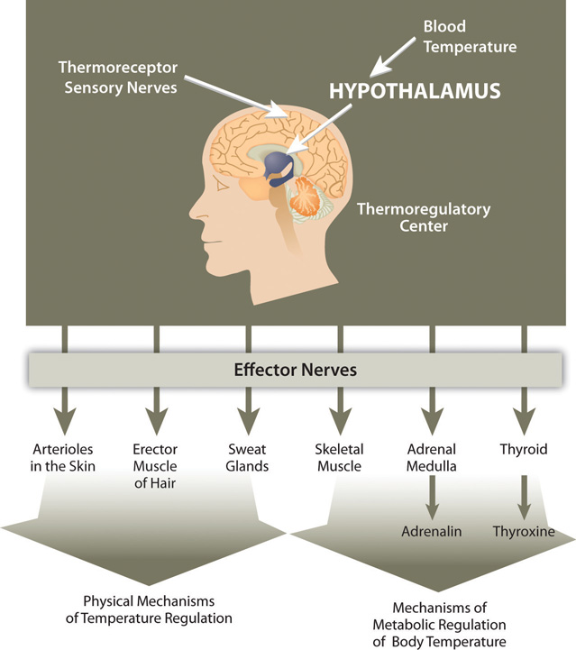

You get up in the morning, flush wastes down the toilet, take a shower, brush your teeth, drink, eat, drive, wash the grime from your windshield, get to work, and drink coffee. Next to a fountain you eat lunch and down it with a glass of water, you use the toilet again and again, drive home, prepare dinner, etc. Add all the ways you use water every day and you still will not come close to the countless uses water has in the human body. Of all the nutrients, water is the most critical as its absence proves lethal within a few days. Organisms have adapted numerous mechanisms for water conservation. Water uses in the human body can be loosely categorized into four basic functions: transportation vehicle, medium for chemical reactions, lubricant/shock absorber, and temperature regulator.
Water is called the “universal solvent” because more substances dissolve in it than any other fluid. Molecules dissolve in water because of the hydrogen and oxygen molecules ability to loosely bond with other molecules. Molecules of water (H2O) surround substances, suspending them in a sea of water molecules. The solvent action of water allows for substances to be more readily transported. A pile of undissolved salt would be difficult to move throughout tissues, as would a bubble of gas or a glob of fat. Blood, the primary transport fluid in the body is about 78 percent water. Dissolved substances in blood include proteins, lipoproteins, glucose, electrolytes, and metabolic waste products, such as carbon dioxide and urea, all of which are either dissolved in the watery surrounding of blood to be transported to cells to support basic functions or are removed from cells to prevent waste build-up and toxicity. Blood is not just the primary vehicle of transport in the body, but also as a fluid tissue blood structurally supports blood vessels that would collapse in its absence. Similarly, the brain is 75 percent water, with the water in the brain providing structure.
Water is required for even the most basic chemical reactions. In Chapter 6 "Proteins" you learned that enzymes are proteins and proteins fold into their functional shape based on how their amino-acid sequences react with water. Once formed, enzymes must conduct their specific chemical reactions in a medium, which in all organisms is water. Water is an ideal medium for chemical reactions as it can store a large amount of heat, is electrically neutral, and has a pH of 7.0, meaning it is not acidic or basic. Additionally, water is involved in many enzymatic reactions as an agent to break bonds or, by its removal from a molecule, to form bonds.
Many may view the slimy products of a sneeze as gross, but sneezing is essential for removing irritants and could not take place without water. Mucus, which is not only essential to discharge nasal irritants, but also required for breathing, transportation of nutrients along the gastrointestinal tract, and elimination of waste materials through the rectum is composed of more than 90 percent water. Mucus is a front-line defense against injury and foreign invaders. It protects tissues from irritants, entraps pathogens, and contains immune-system cells that destroy pathogens. Water is the main component of the lubricating fluid between joints and eases the movement of articulated bones.
The aqueous and vitreous humors, which are fluids that fill the extra space in the eyes and the cerebrospinal fluid surrounding the brain and spinal cord are primarily water and buffer these organs against sudden changes in the environment. Watery fluids surrounding organs provide both chemical and mechanical protection. Just two weeks after fertilization water fills the amniotic sac in a pregnant woman providing a cushion of protection for the developing embryo.
Another homeostatic function of the body, termed thermoregulationThe balance of heat gain with heat loss in the body. is to balance heat gain with heat loss and body water plays an important role in accomplishing this. Human life is supported within a narrow range of temperature, with the temperature set point of the body being 98.6°F (37°C). Too low or too high of a temperature causes enzymes to stop functioning and metabolism is haulted. At 82.4°F (28°C) muscle failure occurs and hypothermia sets in. At the opposite extreme of 111.2°F (44°C) the central nervous system fails and death results. Water is good at storing heat, an attribute referred to as heat capacityThe capability of a substance to store heat. and thus helps maintain the temperature set point of the body despite changes in the surrounding environment.
There are several mechanisms in place that move body water from place to place as a method to distribute heat in the body and equalize body temperature (Figure 7.2). The hypothalamus in the brain is the thermoregulatory center. The hypothalamus contains special protein sensors that detect blood temperature. The skin also contains temperature sensors that respond quickly to changes in immediate surroundings. In response to cold sensors in the skin, a neural signal is sent to the hypothalamus, which then sends a signal to smooth muscle tissue surrounding blood vessels causing them to constrict and reduce blood flow. This reduces heat lost to the environment. The hypothalamus also sends signals to muscles to erect hairs and shiver and to endocrine glands like the thyroid to secrete hormones capable of ramping up metabolism. These actions increase heat conservation and stimulate its production in the body in response to cooling temperatures.
Figure 7.2
Thermoregulation is the ability of an organism to maintain body temperature despite changing environmental temperatures.
When body temperature rises, as what occurs during exercise, the hypothalamus detects an increase in blood temperature. In response, the hypothalamus sends a signal to the smooth muscle of blood vessels causing them to dilate so that more blood flows to the body’s periphery. Once on the skin, extra heat exits the body via perspiration (sweat), which is 98 to 99 percent water. Water on the skin’s surface evaporates, a process that takes energy and results in the loss of heat, thereby cooling the body. Perspiration is a process that intertwines temperature homeostasis with fluid and electrolyte homeostasis. Water and electrolytes lost in sweat need to be replenished in order to maintain fluid and electrolyte balance. In Section 7.3 "Regulation of Water Balance", we will explain the physiological mechanisms that are involved in maintaining fluid and electrolyte balance in the body.